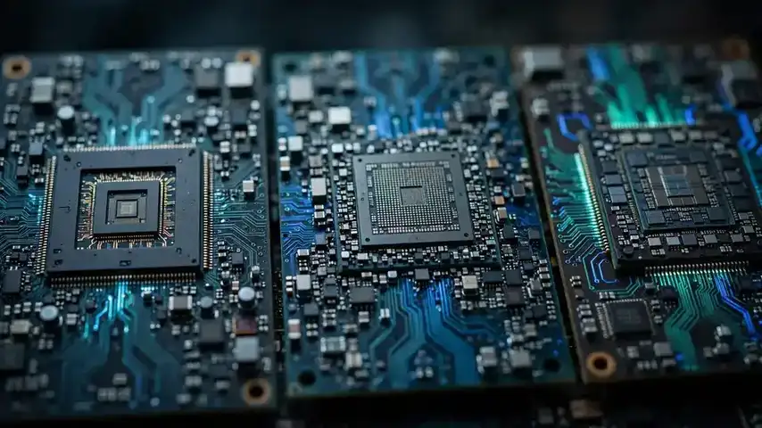

Phancy open-sources ModelSphere: a chip-agnostic LLM serving platform that claims 4x throughput
- Who: Phancy Group Co., Ltd. (6682.HK), a Beijing full-stack enterprise-AI cloud platform, together with RiseUnion Technology Co., Ltd.
- What: ModelSphere — a one-stop, production-grade AI deployment platform, free and open source under the Apache 2.0 license at github.com/modelsphere/modelsphere.
- When: announced October 16, 2026, via a Media OutReach Newswire release out of Beijing.
- The number: built-in AutoTune scheduling boosts peak throughput by up to 285% versus baseline — “nearly four times the previous level,” per the announcement.
- Chips: unified, mixed scheduling across Huawei Ascend, Iluvatar CoreX, Moore Threads and Hygon DCU — plus Nvidia GPUs — with no per-chip low-level rewrites.
- Models & engines: day-one tuned configs for DeepSeek-V4/V4-Flash, Qwen, Kimi, MiniMax and GLM; sits above vLLM and SGLang at the cluster level.
The hardest part of running a large language model in production often isn't the model — it's the plumbing: spreading inference across a mixed fleet of accelerators, keeping latency steady under load, and re-tuning every time a new model drops. Today Phancy Group and RiseUnion open-sourced the system they say solves it: ModelSphere, a production-grade AI deployment platform released under the Apache 2.0 license.
The announcement, issued October 16, 2026 via Media OutReach Newswire, frames ModelSphere as a one-stop platform that folds computing-resource management, model deployment, and runtime optimization into a single workflow — aimed squarely at enterprises trying to turn raw compute into stable, commercial AI services. Media OutReach Newswire, DagangNews
One platform above the engines
ModelSphere doesn't replace inference engines — it sits above them. Where vLLM and SGLang squeeze efficiency out of individual servers, ModelSphere manages the cluster: load- and cache-aware request routing, a unified KV cache pool, quality-of-service-based automatic scaling, automatic resumption of interrupted streams, and automated performance tuning driven by live production data.
The four headline capabilities read like a production checklist. A graphical console with pre-built deployment templates stands up inference services with less environment-configuration code. Automatic elastic scaling, prefill-decode disaggregated deployment, three-tier KV caching, and high-availability load balancing keep services stable. And when a serving pod dies mid-generation, the platform moves the in-flight request to a healthy pod and resumes from the interruption point rather than restarting.

Built for China's chip mix
The chip-agnostic pitch is the point. Integrated with Phancy's EngineX inference engine, ModelSphere promises unified, mixed scheduling across a roster that reads like a map of China's AI-silicon push: Huawei Ascend, Iluvatar CoreX, Moore Threads and Hygon DCU — alongside Nvidia GPUs — so teams don't rewrite driver-level code per chip.
That's a direct answer to the fragmentation tax facing Chinese enterprises: a fleet bought over several years can hold four vendors' accelerators, each with its own toolchain. A single scheduling layer that treats them as one pool is the difference between stranded compute and usable capacity. The GitHub repository — github.com/modelsphere/modelsphere, live since late September — shows the same shape: Kubernetes-native deployment with helm charts, an LLM-aware operator for autoscaling, and cache-aware routing components.
The 285% claim, and the fine print
The number Phancy leads with is bold: the built-in AutoTune scheduler — which explores better serving configurations during idle compute and balances load against real-time metrics like time-to-first-token — boosts peak throughput by up to 285% compared with the baseline, “nearly four times the previous level.”
Take it as a vendor benchmark until independent numbers land; throughput claims always depend on the baseline, the workload, and the hardware mix. But the mechanism is at least specific — continuous tuning from production data rather than static config — and the project also ships day-one tuned deployments for the models Chinese enterprises actually run: DeepSeek-V4 and V4-Flash, Qwen, Kimi, MiniMax and GLM.
Why open-source it
Giving away the platform is the strategy, not the sacrifice. Phancy — whose other products include SageAIOS, HAMi vGPU and ModelHub XC — pitches itself as a “Navigator of AI” building a large-scale “Token Factory,” and open-sourcing the serving layer invites the ecosystem to extend chip and model support on Phancy's behalf. Every new accelerator vendor that integrates itself makes the platform stickier for everyone else.
For teams outside China the timing is interesting too: with export controls reshaping which chips anyone can buy, a platform designed from day one for heterogeneous, mixed-vendor fleets may find an audience far beyond Beijing. The code is on GitHub now, free for enterprise users under Apache 2.0 — and the next few months of issues, stars and pull requests will say more about ModelSphere than any launch-day benchmark.
Frequently asked questions
What is ModelSphere?
ModelSphere is an open-source platform for deploying and running large language models in production. Launched by Phancy Group and RiseUnion on October 16, 2026, it sits above inference engines like vLLM and SGLang and handles cluster-level work: request routing, a unified KV cache pool, automatic scaling, and continuous performance tuning.
Which chips and models does it support?
It supports heterogeneous accelerators including Huawei Ascend, Iluvatar CoreX, Moore Threads and Hygon DCU, plus Nvidia GPUs — scheduled as one mixed pool without per-chip low-level rewrites. The team ships tuned deployments for DeepSeek-V4/V4-Flash, Qwen, Kimi, MiniMax and GLM.
Where can I get it, and what does it cost?
ModelSphere is available now on GitHub at github.com/modelsphere/modelsphere under the Apache 2.0 license — free and open source for enterprise users.